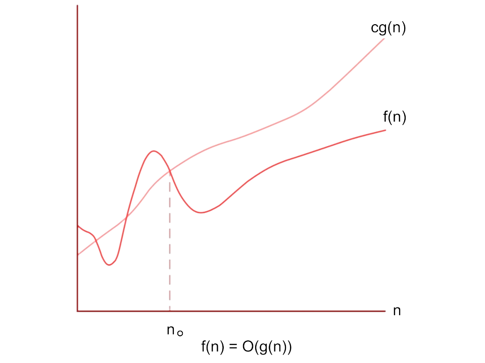
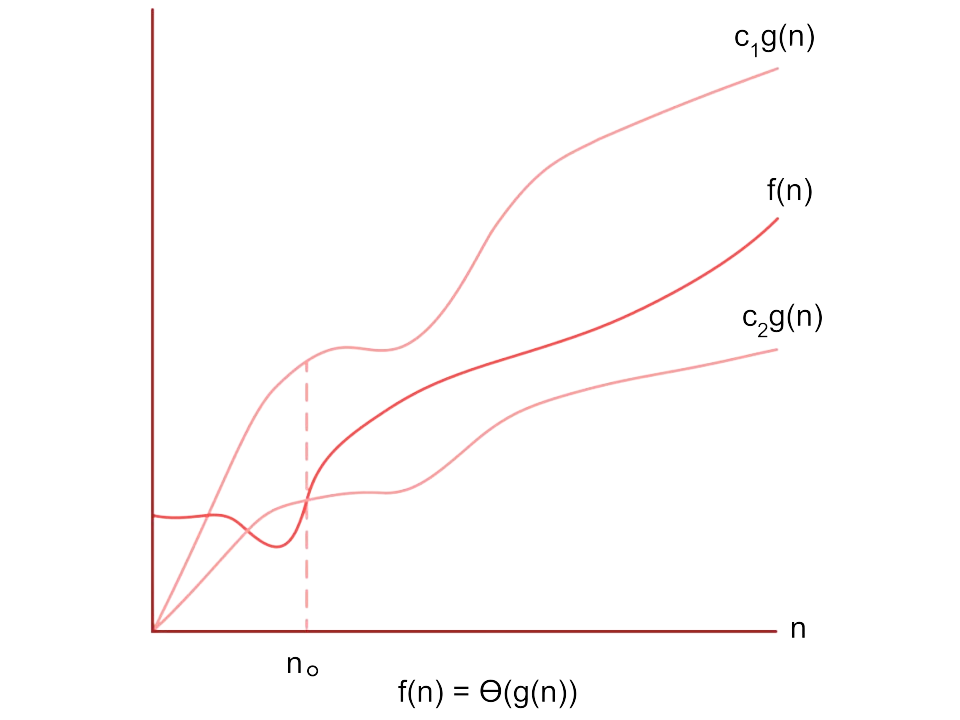

Time and Space Complexity
In the world of computer science, there are often many ways to solve a problem using different algorithms. So, it's important to have a method to compare these solutions and figure out which one is the most efficient. The method we use should have the following qualities:
Works on any computer: The method shouldn't depend on the specific computer or how it's set up. It should be fair and consistent, no matter what kind of machine we're using.
Relates to the input size: A good method for comparing algorithms should show a clear connection to the amount of data we're working with. As the number of inputs gets bigger or smaller, the method should give us a sense of how well the algorithms will perform. This helps us understand which solution is better suited for different amounts of data.
Gives a clear answer: It's important to have a method that doesn't leave room for confusion. We need a way to compare algorithms that provides a straightforward and unmistakable answer. This helps us make confident decisions about which solution to use for our specific needs.
By using a method that meets these criteria, computer scientists and developers can compare different algorithms objectively. Whether we're looking at the speed of sorting algorithms or how much memory a data structure uses, having a reliable and easy-to-understand method for comparing solutions is crucial.
You're amazed by Google's lightning-fast search results. With just a few keystrokes, it retrieves millions of web pages and presents you with the desired information in the blink of an eye. Have you ever pondered how it achieves such incredible speed? Behind the scenes, Google harnesses the power of its enormous data centers, which act as vast repositories for storing and processing data.
Similarly, when it comes to coding, have you ever wondered how efficiently your algorithms perform? How quickly do they solve problems, and how much memory do they consume? These questions can be answered by exploring the concepts of time and space complexity.
Understanding Time Complexity
Time complexity is a formal measure in computer science that quantifies the amount of time required by an algorithm to run as a function of the input size. It provides a theoretical estimation of the algorithm's efficiency and scalability.
Time complexity provides a quantifiable measure of the time an algorithm takes to run, based on the length of the input. What makes time complexity particularly valuable is its independence from the machine or its configuration. Instead, it focuses solely on the inherent efficiency of the algorithm itself. In essence, time complexity tells us how quickly an algorithm solves a problem, regardless of the specific execution time on different machines.
Space Copmlexity
Space complexity is a formal measure in computer science that quantifies the amount of memory or storage required by an algorithm to solve a problem as a function of the input size. It provides a theoretical estimation of the algorithm's memory usage and storage requirements.
Imagine you are packing for a thrilling adventure. You have a limited amount of space in your backpack, and you want to bring along all the necessary items without overloading it. This is similar to the concept of space complexity in computer science. Space complexity measures the amount of memory or storage an algorithm requires to solve a problem. It's like deciding how much space you need in your backpack to carry all the items you'll need for your adventure.
The space-time tradeoff
The space-time tradeoff is a fundamental concept in computer science that involves making strategic decisions regarding the allocation of resources between space and time. In algorithm design, optimizing one aspect often comes at the expense of the other. By utilizing additional memory or storage space, computational time can be significantly reduced, resulting in faster execution. Conversely, reducing space requirements may come with the cost of increased processing time. This tradeoff is particularly crucial in scenarios where memory or storage is limited, such as embedded systems or devices with constrained resources. Achieving the optimal balance between space and time is a key objective in algorithmic optimization, enabling developers to tailor solutions that strike an appropriate tradeoff based on the specific requirements and constraints of the problem at hand.
Let us now study the various notations used to study time and space complexity
Big O Notation (O)
Big O notation is commonly used to describe the upper bound or worst-case scenario of an algorithm's time or space complexity. It provides an asymptotic upper limit on how the algorithm's performance grows as the input size increases.
The formal definition of Big O notation (O) is as follows:
For a given function g(n), we say that an algorithm has a time or space complexity of O(g(n)) if there exist positive constants c and n₀ such that, for all input sizes greater than n₀, the algorithm's performance is always less than or equal to c * g(n).

In simpler terms, Big O notation represents an algorithm's efficiency in terms of an upper bound. It describes how the algorithm's time or space requirements scale with the input size, without going into the specifics of exact execution times or memory usage.
Big O notation is widely used as it provides a concise way to categorize algorithms based on their scalability and helps in comparing different approaches to problem-solving.
Omega Notation (Ω)
The primary purpose of Omega Notation is to define a lower bound for an algorithm's efficiency, indicating the minimum time or space required for solving a problem. It establishes the best-case scenario, representing the optimal performance achievable by an algorithm.
The formal definition of Omega notation (Ω) is as follows:
For a given function g(n), we say that an algorithm has a time or space complexity of Ω(g(n)) if there exist positive constants c and n₀ such that, for all input sizes greater than n₀, the algorithm's performance is always greater than or equal to c * g(n).
Omega Notation is particularly useful in scenarios where we want to analyze the lower limits of an algorithm's efficiency. It helps us understand the best-case behavior and assess the performance characteristics of algorithms in favorable circumstances.
Theta Notation (Θ)
Theta Notation defines a tight bound for an algorithm's efficiency, indicating both the upper and lower limits of its performance. It represents the average behavior of the algorithm and provides a comprehensive understanding of its time or space requirements.

The formal definition of Theta notation (Θ) is as follows:
For a given function g(n), we say that an algorithm has a time or space complexity of Θ(g(n)) if there exist positive constants c₁, c₂, and n₀ such that, for all input sizes greater than n₀, the algorithm's performance is always bounded by c₁ * g(n) and c₂ * g(n). In other words, the algorithm's efficiency is neither faster nor slower than the given function g(n) within the defined range.
Theta Notation is particularly valuable when we want to analyze the average-case behavior of an algorithm. It helps us understand the typical performance characteristics and assess how the algorithm scales with increasing input sizes.
By using Theta Notation, we can determine the tightest possible bound for an algorithm's time or space complexity. It allows us to identify the range within which the algorithm consistently performs and provides valuable insights into its overall efficiency.
Little O Notation (o)
Little O notation expresses the growth rate of an algorithm's efficiency in comparison to a given function. It signifies that the algorithm's time or space requirements have a growth rate that is significantly smaller than the specified function.
The formal definition of Little O notation (o) is as follows:
For a given function g(n), we say that an algorithm has a time or space complexity of o(g(n)) if, for any positive constant c, there exists a positive constant n₀ such that, for all input sizes greater than n₀, the algorithm's performance is always bounded by c * g(n). In simpler terms, the algorithm's efficiency grows at a much slower rate than the specified function.
By using Little O notation, we can analyze and compare the efficiency of algorithms relative to a specific function. It allows us to identify algorithms that exhibit exceptionally efficient behavior, indicating that their growth rates are significantly slower than the function they are compared to.
Little Omega Notation (ω)
Little Omega notation expresses the growth rate of an algorithm's efficiency in comparison to a given function. It signifies that the algorithm's time or space requirements have a growth rate that is at least as fast as the specified function.
The formal definition of Little Omega notation (ω) is as follows: Formally, for a given function g(n), we say that an algorithm has a time or space complexity of ω(g(n)) if, for any positive constant c, there exists a positive constant n₀ such that, for all input sizes greater than n₀, the algorithm's performance is always bounded below by c * g(n). In simpler terms, the algorithm's efficiency grows at least as fast as the specified function.
Little Omega notation is often used to emphasize that an algorithm's performance is at least as good as the function it is compared to. It provides a way to highlight the lower bounds and best-case behavior of an algorithm's time or space complexity.
Let's try to understand the concepts with some examples
Example 1
for(int i=0;i < n ; i++){
System.out.print("VictoryPoint");
}
The time complexity of this loop is O(n), also known as Linear Time Complexity.
This is because each iteration of the loop takes a constant amount of time, and the loop itself will run n times. As such, the total time taken scales linearly with the size of the input n.
Example 2
int i=1;
while(i < 2*n){
System.out.println("VictoryPoint");
i++;
}
The complexity of the given code is O(n) and not O(2*n) because, in Big O notation, constant factors are ignored.
When analyzing the time complexity of an algorithm, we are concerned with how the runtime grows relative to the input size (denoted by 'n').
Adding time complexities
We add time complexities when separate parts of code run independently or sequentially. We sum up the complexities of these parts to find the overall time complexity. However, we only consider the dominant term for the final complexity. For example, if we have O(n) and O(n^2), the overall complexity is O(n^2).
Example 3
int i=1;
while(i < n){
System.out.println("VictoryPoint");
i++;
}
for(int i=0;i < n;i++){
System.out.println("VictoryPoint")
}
Since both code snippets have a time complexity of O(n), the total time complexity when executed sequentially is O(n + n), which simplifies to O(2n). However, in Big O notation, we drop the constant factor, so the overall time complexity is O(n). Therefore, adding the time complexities of the two snippets results in O(n).
Example 4
for(int i=2*n;i>1;i=i/2){
System.out.print("VictoryPoint");
}
The given code runs a loop starting from 2*n and divides 'i' by 2 in each iteration until 'i' becomes 1 or less. The value of 'i' can be represented as n, n/2, n/4, n/8, and so on. The loop stops when 'i' becomes 1. Thus, the time complexity is O(log n) due to the logarithmic decrease in 'i' at each step.
Multiplying time complexities
We multiply the complexity of the inner loop by the outer loop when the inner loop is dependent on the outer loop and runs completely for each iteration of the outer loop. This allows us to calculate the overall time complexity of the nested loops, expressed as O(outer loop * inner loop).
Example 5
for(int i=0;i < n;i++){
for(int j=0;j < n;j++){
System.out.print("VictoryPoint");
}
}
The code consists of two nested loops, each iterating 'n' times. This results in a total of n * n = n^2 iterations. Consequently, the time complexity is O(n^2), signifying a quadratic growth rate concerning the input size 'n'.
Example 6
int i=0;
int j=n;
whlie(i < n){
i++;
while(j > 1){
j=j/2;
System.out.print("VictoryPoint");
}
}
The given code has two nested loops. The outer loop runs 'n' times, and for each iteration, the inner loop runs log2(n) times due to halving 'j' in each step. Consequently, the overall time complexity of the code is O(n * log n).
Unrolling the loop
Unrolling the loops is done to calculate the total number of iterations in nested loops when their time complexity is not immediately evident. It helps analyze complex conditions and dependencies between loop variables, providing a clearer understanding of the algorithm's growth rate.
Example 7
for (int i = 0; i < n; i++) {
for (int j = i; j < n; j++) {
System.out.print("VictoryPoint");
}
}
In this code, the inner loop is dependent on the value of 'i', which is determined by the outer loop. The outer loop runs 'n' times, and for each iteration, the inner loop runs (n - i) times. To find the total number of iterations, we need to unroll the loops:
- 1st iteration of outer loop: inner loop runs (n - 0) times
- 2nd iteration of outer loop: inner loop runs (n - 1) times
- 3rd iteration of outer loop: inner loop runs (n - 2) times
- nth iteration of outer loop: inner loop runs (n - (n-1)) = 1 time
The total number of iterations can be represented as the sum of (n - i) for i = 0 to n-1:
(n - 0) + (n - 1) + (n - 2) + ... + 1
This sum is an arithmetic series, and its sum can be calculated using the formula:
Sum = n * (n + 1) / 2.
Example 8
for (int i = 1; i <= n; i *= 2) {
for (int j = 0; j < n; j++) {
System.out.print("VictoryPoint");
}
}
In this code, the inner loop is independent of the outer loop variable 'i'. The outer loop starts with 'i' as 1 and doubles 'i' in each iteration until 'i' becomes greater than 'n'. The inner loop runs 'n' times for each iteration of the outer loop. To find the total number of iterations, we unroll the loops:
- 1st iteration of outer loop: inner loop runs n times
- 2nd iteration of outer loop: inner loop runs n times
- 4th iteration of outer loop: inner loop runs n times
- 8th iteration of outer loop: inner loop runs n times
- nth iteration of outer loop: inner loop runs n times
The total number of iterations is n * log2(n) since 'i' doubles in each iteration until it exceeds 'n', which happens approximately log2(n) times.
Therefore, the time complexity of the code is O(n * log n).
Now practice some questions to test your understanding!